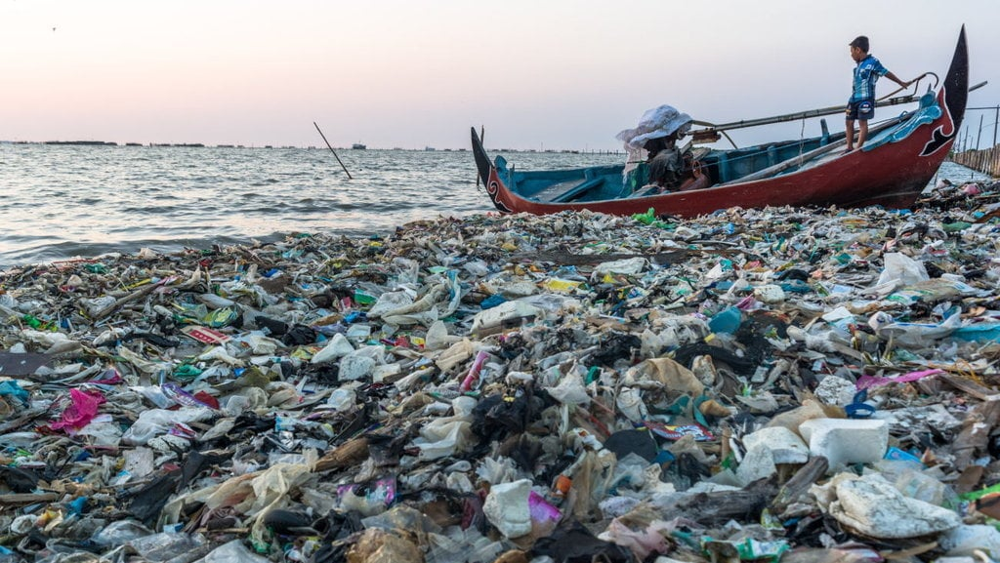
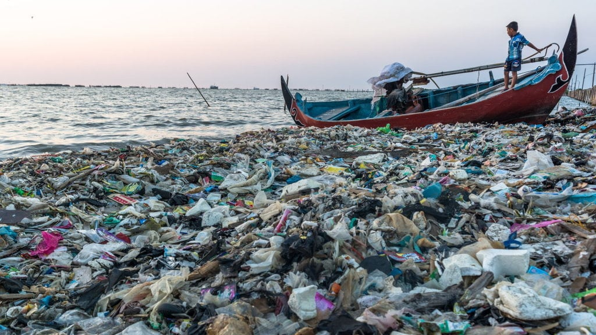

Dekonstruksi Kerusakan Lingkungan Lautan
Menganalisa penyabab dan dampak sampah plastik di laut
Menganalisa penyabab dan dampak sampah plastik di laut
Penangkapan ikan secara berlebihan tanpa memperhatikan kapasitas regenerasi populasi ikan dapat mengganggu keseimbangan ekosistem laut.

Limbah industri, pertanian, dan perkotaan yang masuk ke perairan laut dapat mencemari lingkungan laut dan meracuni makhluk hidup di dalamnya.
Penggunaan plastik sekali pakai yang tidak terkelola dengan baik dapat mencemari laut dan membahayakan satwa laut yang memakan atau terperangkap oleh sampah plastik.
Ketika ekosistem laut rusak, banyak spesies ikan, mamalia laut, dan organisme lainnya yang terancam punah. Ini bisa mengganggu rantai makanan dan keseimbangan ekosistem secara keseluruhan.
Gangguan seperti polusi, peningkatan suhu air laut, atau penangkapan ikan berlebihan dapat merusak terumbu karang. Ini berdampak pada ribuan spesies yang bergantung padanya untuk makanan, tempat berlindung, dan reproduksi.
Rusaknya ekosistem laut bisa menurunkan produksi sumber daya penting bagi manusia seperti makanan, obat-obatan, bahan bakar, dan material konstruksi. Hal ini bisa mengancam keberlanjutan sumber daya dan kesejahteraan manusia.
Rusaknya ekosistem laut bisa menurunkan produksi sumber daya penting bagi manusia seperti makanan, obat-obatan, bahan bakar, dan material konstruksi. Ini dapat mengancam keberlanjutan sumber daya dan kesejahteraan manusia.
Ekosistem laut yang rusak dapat mengganggu ketersediaan dan keberlanjutan sumber pangan laut, seperti ikan, kerang, dan krustasea. Hal ini dapat menyebabkan penurunan produksi perikanan dan mengancam ketahanan pangan masyarakat yang bergantung pada hasil laut.
Kerusakan ekosistem laut dapat mengakibatkan kehilangan mata pencaharian bagi nelayan, petani kerang, dan pekerja industri kelautan lainnya yang bergantung pada sumber daya laut untuk mencari nafkah.
Pencemaran laut dan penurunan kualitas air laut dapat menyebabkan penyebaran penyakit, terutama bagi masyarakat yang mengonsumsi hasil laut secara langsung atau terpapar oleh lingkungan laut yang tercemar.
Degradasi terumbu karang bisa menyebabkan kehilangan habitat penting bagi berbagai spesies laut, termasuk ikan, moluska, dan organisme lainnya. Mereka bergantung pada terumbu karang untuk tempat berlindung, berkembang biak, dan mencari makan.
Kerusakan ekosistem laut bisa mengancam kelangsungan hidup berbagai spesies laut dengan menurunkan keberagaman spesies, kesehatan genetik, dan meningkatkan risiko kepunahan.
Penurunan kualitas air laut dan polusi bisa meningkatkan risiko penyakit pada biota laut, termasuk bleaching pada terumbu karang dan infeksi bakteri pada ikan.
Rusaknya ekosistem laut dapat mengubah rantai makanan dan menyebabkan ketergantungan berlebih pada beberapa spesies, berdampak signifikan pada ekosistem laut.
“ Laut bukanlah tempat sampah kita. Laut adalah sumber kehidupan yang menakjubkan dan memerlukan perlindungan. “

 
